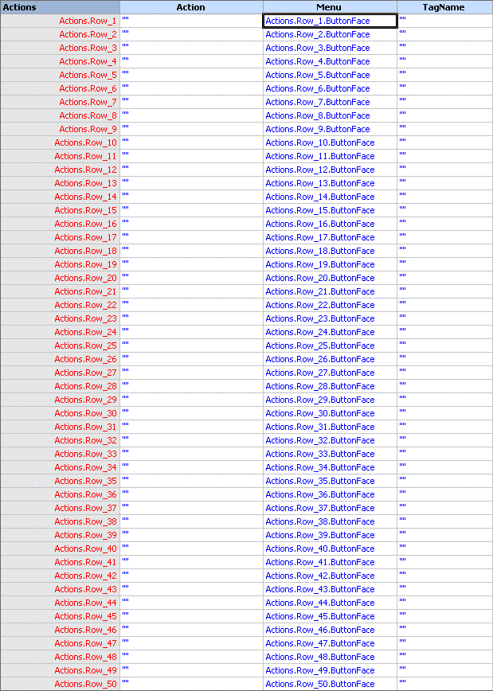
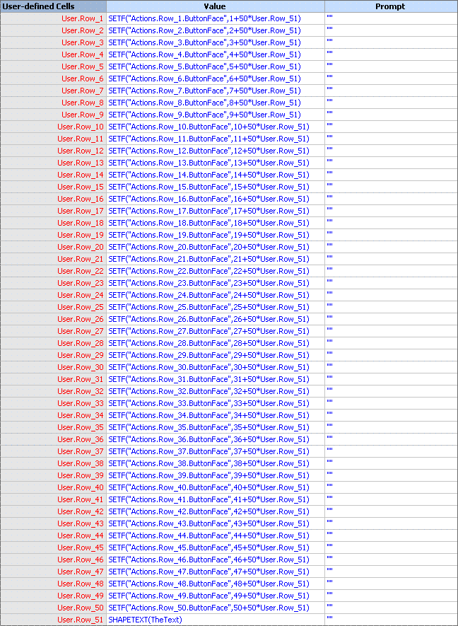
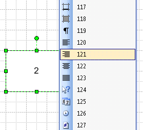
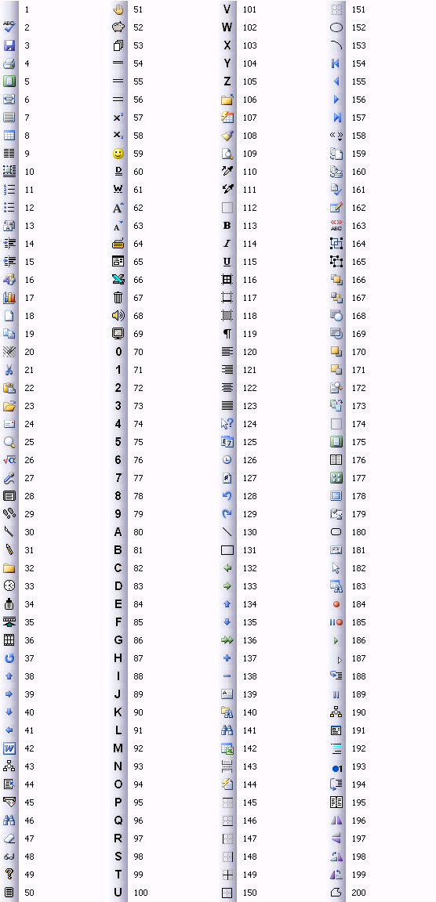
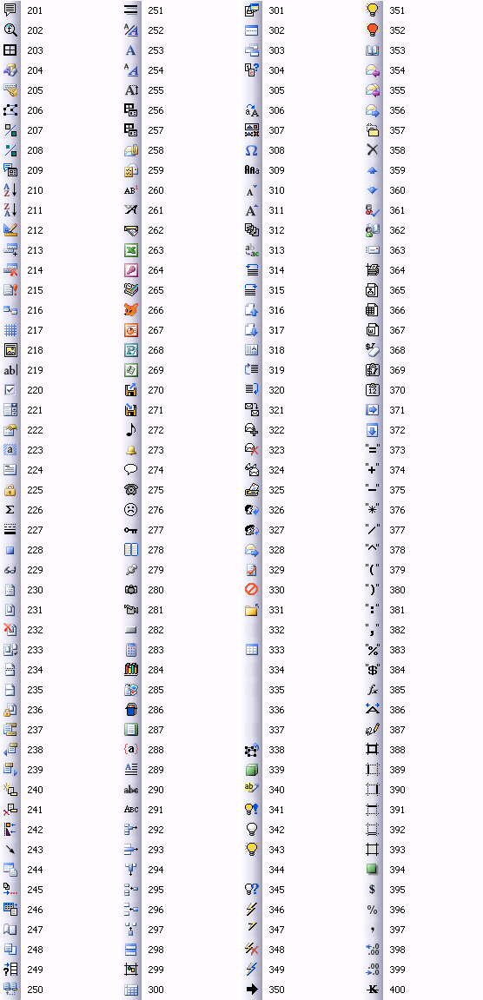
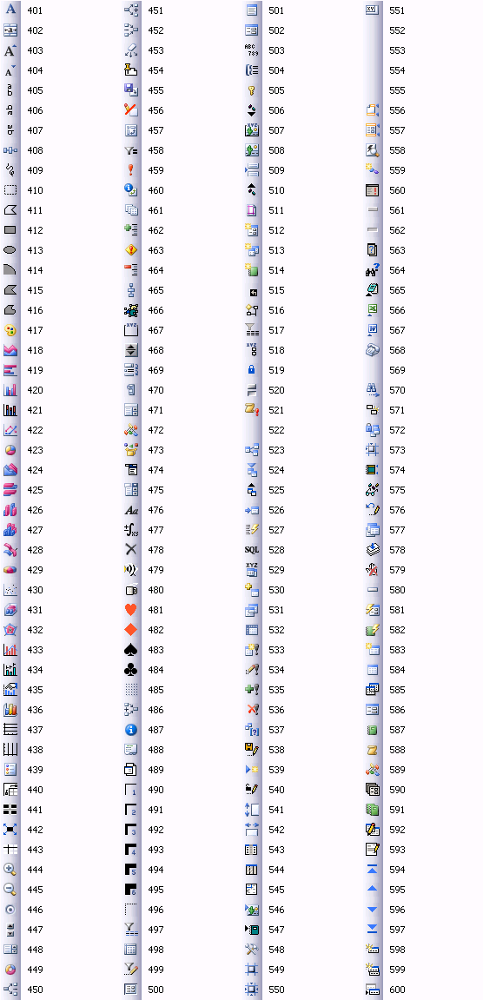
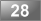
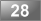

Статья 28. Разукрашиваем Actions
 Часто, при создании нового меню мы можем лишь текстовой строкой показать пользователю на какой-либо пункт меню. Но это не предел. Помимо текстовой составляющей мы можем сделать и значок для нашей команды. Как именно сделать это, и рассказывается в статье.
Часто, при создании нового меню мы можем лишь текстовой строкой показать пользователю на какой-либо пункт меню. Но это не предел. Помимо текстовой составляющей мы можем сделать и значок для нашей команды. Как именно сделать это, и рассказывается в статье.
А теперь немного теории. В таблице фигур (ShapeSheet) есть ячейка ButtonFace, которая отвечает за изображение при выборе команды.
К примеру, если заполнить поле Menu каким-либо текстом и поставить в ячейку ButtonFace число 2, то отобразиться значок проверки орфографии. Т.е. по сути ограничения касаются только выбором из заранее предопределенных
«образов», зато таких «образов» в Офисе порядка 6—7 тысяч. Есть где развернуться.
Итак, с теорией покончено, теперь необходимо сделать фигуру, которая показывала бы максимально количество этих самых значков. МОжно конечно самому по одному числу просмотреть 6 тысяч значков, но это дело крайне неблагодарное, хочется какой-либо выбор.
Итак, все что нам понадобится — это прямоугольник посередине листа. Все остальные действия будут производиться уже в Таблице фигур. Нарисовав прямоугольник входим в Таблицу фигур. Далее создаем раздел User-defined cells и уже в этом разделе создаем 51 ячейку. Почему 51, спросите вы. Потому, что в 51 ячейку мы внесем текст фигуры, а в 50 оставшихся одинаковую, ну, почти одинаковую, формулу.
Думаю, что раз уж вы, дорогой читатель, на 28 статье, то вставить формулу изъятия текста фигуры уже не представляется такой сложной задачей, я все же напомню.
=SHAPETEXT(TheText)
И вставляем эту формулу именно в 51 ячейку. Почему не в первую, сейчас поймете.
Теперь надо в разделе Actions создать 50 строк и во все строки ввести следующие формулы (в столбец Menu):
Actions.Row_1.Menu =Actions.Row_1.ButtonFace
Actions.Row_2.Menu =Actions.Row_2.ButtonFace
...
Actions.Row_50.Menu =Actions.Row_50.ButtonFace

Теперь заполняем раздел User-defined Cells.
User.Row_1 =SETF("Actions.Row_1.ButtonFace",1+50*User.Row_51)
User.Row_2 =SETF("Actions.Row_2.ButtonFace",2+50*User.Row_51)
...
User.Row_50 =SETF("Actions.Row_50.ButtonFace",50+50*User.Row_51)

Как видите, заполнять такт-в-такт гораздо удобнее.
Теперь остается только ввести номер в фигуру и вызвать контекстное меню.

Теперь останется только запомнить номер понравившегося значка и ввести его в соответствующую ячейку ButtonFace строки команды.
Приведу некоторые значки для удобства:



Статьи:


 

В начало раздела
Автор: Ничков Алексей (a.k.a. Digitall)